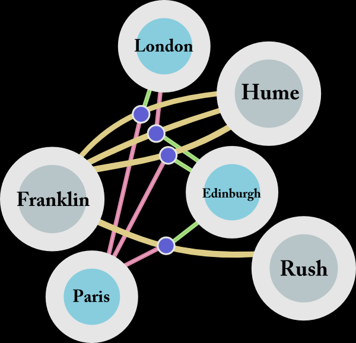
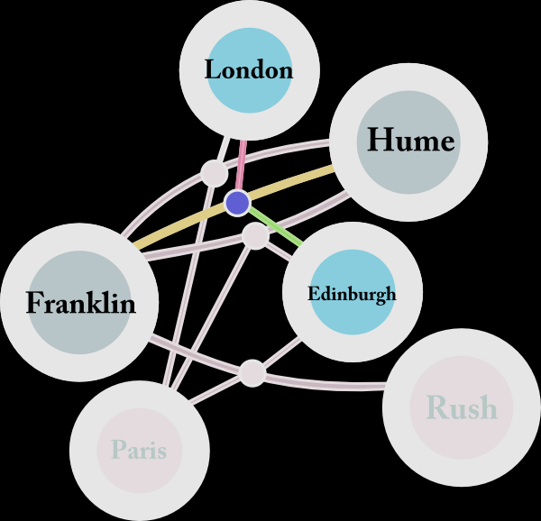
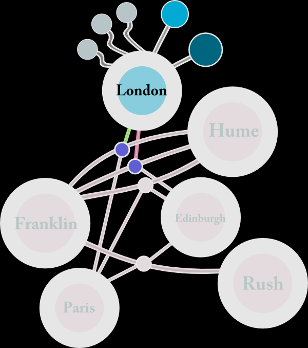
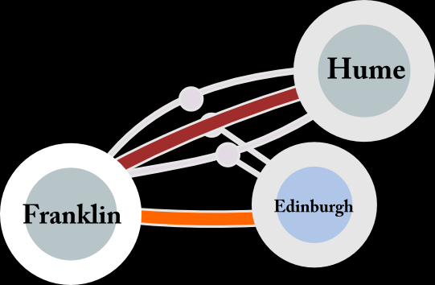
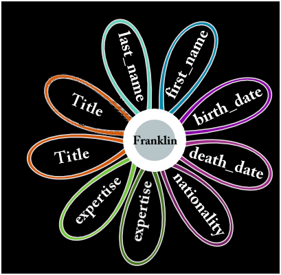

I’m getting ready for the Digital Humanities 2011 conference here at Stanford this month and the panel I’m on, Modeling Event-Based Historical Narratives, has decided to build short position papers in preparation for our presentation. I plan to present the most radical interpretation of event modeling, envisioning every thing as an event, with an event defined as an intersection between multiple historical edges at a particular chronological range. This most resembles the data model I built with Nicole Coleman for the Mapping the Republic of Letters database. My presentation isn’t about designing the perfect data model, though, it’s about trying to distill this concept into its most formal nature so as to provide a theoretical point of reference from which we may develop actionable event models, whether in graph form or otherwise.
In my mind, the graph data model and the event model seem perfectly suited for each other, and the typical RDF triple underlies the basic structure of the Mapping the Republic of Letters database, though with major revision: along with a subject, object and verb, each link also contains a unique ID for the link, as well as a generic container for data (or annotation, as I’ve grown to understand it) and, finally, a temporal attribute.
An event in this system is thus strictly defined as a unique connection between a subject and an object with a type, that also has an annotation and, finally, occurs during a particular period (whether defined temporally, chronologically or sequentially through reference to other events). The most powerful characteristic of the database as a technique for humanities scholarship is its requirement to build such formal definitions. This formal nature invariably must be corrupted for practical purposes but serves to describe the scholarly claims in a clear manner suitable for analysis.

Such an idealized (and perhaps purposefully radical) definition of event represents any object–person, place or otherwise–as a collection of connections between other objects. Benjamin Franklin is not a person but instead a Kierkegaardian tension between his finite correspondences, business endeavors and objects, as well as between his “infinites” such as class, religion or philosophical tradition. Importantly for historical scholarship, he is a tension between such objects at a certain point of time and a particular scale. In a sense, Benjamin Franklin is a quantum wave that does not collapse into a recognizable object until a frame of reference is provided. It could be “Benjamin Franklin in 1795″ or “Benjamin Franklin at London” or “Benjamin Franklin in French”. Each of these events is a different collection of connections than an imagined (and perhaps Platonic) “Benjamin Franklin in Whole”.

And yet, like any good quantum mechanical metaphor (here I must beg any passing theoretical physicists that they indulge my eccentricity, for all I know of quantum physics is metaphorical or eschatological) the above explanation was only mostly accurate. Benjamin Franklin, after all, is not a tension between objects but really a tension between other tensions, because everything is an event in such a system. The letters which Benjamin Franklin takes part in are also a set of connections, a nexus between author, recipient, source and destination (and if we examine a more complicated event, like the Declaration of Independence, then it is a connection between many authors, editors, signatories, printers and ideologies). This formal structure of organizing knowledge as events then needs a superstructure of rules dealing with aggregation of events in relation to other events. Thus, the important distinction between the claim that everything is an event and that every thing is an event.

A further difficulty of such a system is the mixed nature of the input into it. The Mapping the Republic of Letters database not only contains correspondence but also itineraries, developed by different scholars and tracking different metadata. When examining London, one will not only see the letters sent from London (which are the only way, based on correspondence, that we know Franklin was ever in London) but also the stated claims of particular English tourists as having passed through London. The method for describing tours in the Mapping the Republic of Letters database is not document-centric and makes no reference to the journals or other artifacts from which a claim is made. There is no equivalent to the letter-nexus of the correspondences. It would seem that this difference of storing data would cause compatibility errors for users wishing to compare travel based on itineraries and travel based on correspondence, but the graph nature of the data is actually quite amenable to such a mixed system.

I won’t go into too much detail about how one can actually operate such a database but this is a good place to focus on how scale affects topology. For practical purposes, edges can collapse into meta-edges just as nodes are, for practical purposes, brought into existence to describe the relation between edges. If we are no longer concerned with Franklin’s documents but instead are concerned with his whereabouts, one can simply aggregate his documents into a single connection between Franklin and London, with a chronological character drawn from the aggregated chronological attributes of the documents from which we make that claim. “Franklin in London” is simply a different scale of question, and fits with the scale of the graph data produced based on document-invisible itineraries.

There is a second practical issue of such representation that should be addressed, given how much the relational form dominates database conceptualization. The subject-object nature of graph data does not preclude traditional attribute data associated to an intersection of edges. In graph data, this can be accomplished with what is known as a self loop, where subject and object (or “source” and “target”) are the same. These loops contain what is traditionally thought of as attribute data, raw text, links to objects outside the database, et cetera.
The drawbacks of such a system are that it requires significantly more data literacy on the part of its practitioners and designers as well as investment in building interfaces that best resemble the scholar’s expected manner of input and representation. Likewise, most work done within an event-modeled system will initially involve the transformation of the sophisticated graph data into a traditional tabulated or time-slice representation of the knowledge. It will likely be some time before events in such form will be dealt with as the asynchronous, asymmetrical and ambiguous objects that they really are.